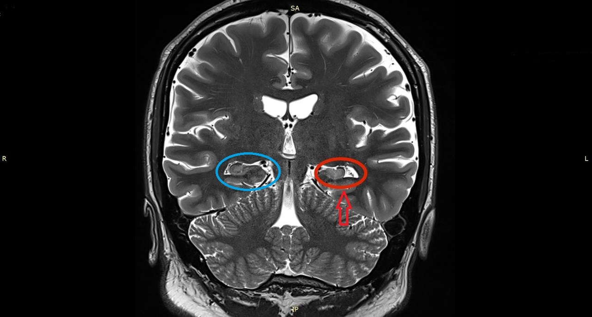

Dado · Pág. 01 de 07
Dois picos e o vale do adulto: quando a imagem muda o jogo
A crise não se espalha igual pela vida: sobe na criança, cai no adulto e sobe de novo no idoso. Esse relevo etário não é decoração epidemiológica — é o que decide se você pede imagem, e qual.
Dois picos: criança e idoso
A faixa etária clássica de crise é bimodal: picos em criança e idoso. No idoso há mais doença cerebral estrutural; na criança predominam causas benignas. O padrão frio da etiologia é exatamente esse: dois picos.
O adulto no vale — “tem alguma coisa errada”
O adulto está no perfil de menor quantidade de crises. A faixa adulta é a que menos tem história de crise para contar. Por isso a pegadinha: se surgir crise na idade adulta, tem alguma coisa errada — não é o “pico natural”.
Causas secundárias típicas no adulto: sequela de TCE, droga, neurocisticercose. Crise no adulto exige investigação.
Criança bem: genética, autolimitada, desenvolvimento preservado
Na criança com neurodesenvolvimento preservado (“muito bem, obrigado”), a causa genética pode iniciar crises. Muitas são autolimitadas: com crescimento, estabilização neuronal e melhor mielinização, as crises cessam.
Padrão-âncora na criança: genética + bom desenvolvimento + crises autolimitadas.
Faixa prática da “criança” neste raciocínio: até ~18 anos (exclui neonatal). Criança (≠ neonatal) com desenvolvimento normal que faz crise e continua se desenvolvendo bem → causas em geral benignas.
Separar etiologia por idade
Separar etiologia por idade ajuda a conduta e o diagnóstico diferencial. O mapa etário não é decoração epidemiológica — ele muda o que você pede no pedido de exame.
Conduta de imagem: quando a RM é peça central
Criança bem desenvolvida com crise de padrão benigno: não precisa de imagem de rotina — explicitamente, não precisa de ressonância nesse perfil.
Do adulto para frente, o raciocínio muda: pensar causas secundárias.
No adulto e no idoso, a crise obriga investigação com imagem.
A melhor imagem para essa investigação é a ressonância magnética.
Conduta de imagem se separa por idade: criança bem ≠ adulto/idoso.
CAIXA-NUANÇA · VFP [019]
Canon da fatia: RM = melhor imagem da investigação etiológica.
Nuance de porta: na emergência, a TC costuma ser o 1º exame disponível para excluir hemorragia, hidrocefalia, AVE agudo ou neoplasia grosseira — por velocidade e logística, não porque seja “melhor” que a RM.
Duas camadas: porta/urgência → TC se disponível e paciente instável; investigação etiológica → RM.

Tabela etiológica por idade
| Faixa | Pico de incidência | Lógica etiológica dominante | Conduta-âncora |
|---|---|---|---|
| Criança (≠ neonatal) bem desenvolvida | alto | genética / benignas / autolimitadas | imagem muitas vezes dispensável |
| Adulto | menor | secundária (TCE, droga, neurocisticercose) | investigar |
| Idoso | alto | doença cerebral estrutural | investigar com imagem |
Fluxograma de imagem por idade (abrir)
causas benignas
imagem frequentemente DISPENSÁVEL
causa secundária em jogo
investigar com IMAGEM → preferir RM (melhor imagem etiológica)
Pegadinha de prova
Crise no adulto não é “pico normal” — é sinal para investigar (TCE, droga, neurocisticercose, estrutural).
Revisão ativa
- Por que o adulto com 1ª crise acende alerta e a criança bem desenvolvida muitas vezes não?
- Em que perfil pediátrico a RM de rotina é dispensável?
- O que a nuance porta (TC) não muda no VFP da “melhor imagem”?
Quiz
Conexão
No idoso, o “estrutural” tem nome e mecânica: AVE, cicatriz e tumor.